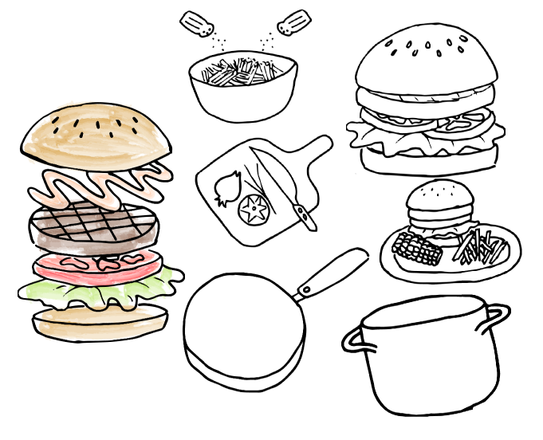
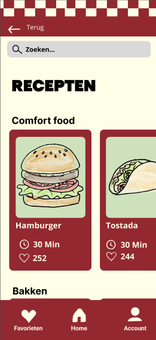
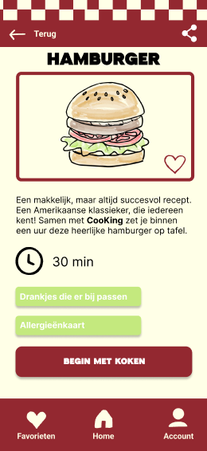
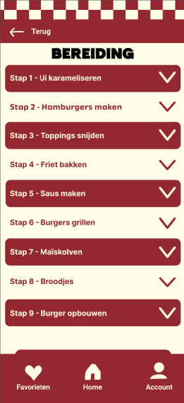

Heel Holland Kookt
Bij Heel Holland Kookt was het de bedoeling dat we een recepten app maakte voor ouderen. In drie weken moesten wij in een groep van vijf studenten verschillende werkende prototypen maken en deze testen met de doelgroep. Elke week hebben wij de testresultaten en feedback verwerkt om tot het eindproduct te komen.
Mijn rol in het project lag grotendeels in de illustraties en het onderzoek.
Hier zijn een aantal illustraties die ik voor de app heb gemaakt.
Hierna volgen enkele schermen van het eindproduct.


